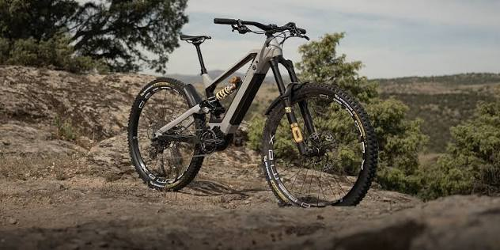
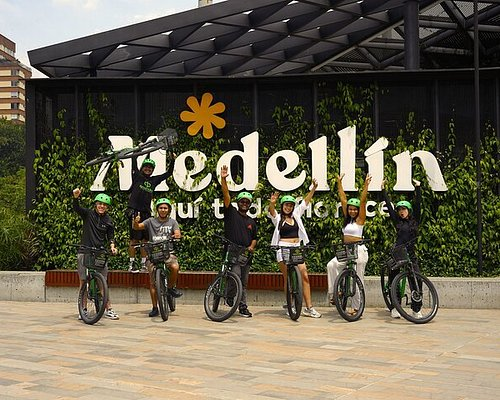

Alquiler de bicicletas

Alquila una bicicleta por horas o por días. Cada alquiler incluye casco y candado.

¡Bienvenidos a Rueda Libre! Alquila tu bicicleta y descubre Medellín sobre dos ruedas. Mira cómo llegar a nuestro punto de alquiler.
Somos un emprendimiento de Medellín que alquila bicicletas y organiza recorridos guiados para que conozcas la ciudad de una forma sostenible y divertida.
Beneficios de alquilar con nosotros:

Alquila una bicicleta por horas o por días. Cada alquiler incluye casco y candado.

Recorre los lugares más representativos de la ciudad con un guía. Los recorridos salen sábados y domingos a las 7:00 a. m. Ver recorridos y precios.
Aprende a cuidar tu propia bicicleta: inflar llantas, ajustar frenos y lubricar la cadena. Cupos limitados.
Estamos en el Parque Lleras, Medellín.
Ver ubicación en el mapa (se abre en otra pestaña) Escríbenos a hola@ruedalibre.example